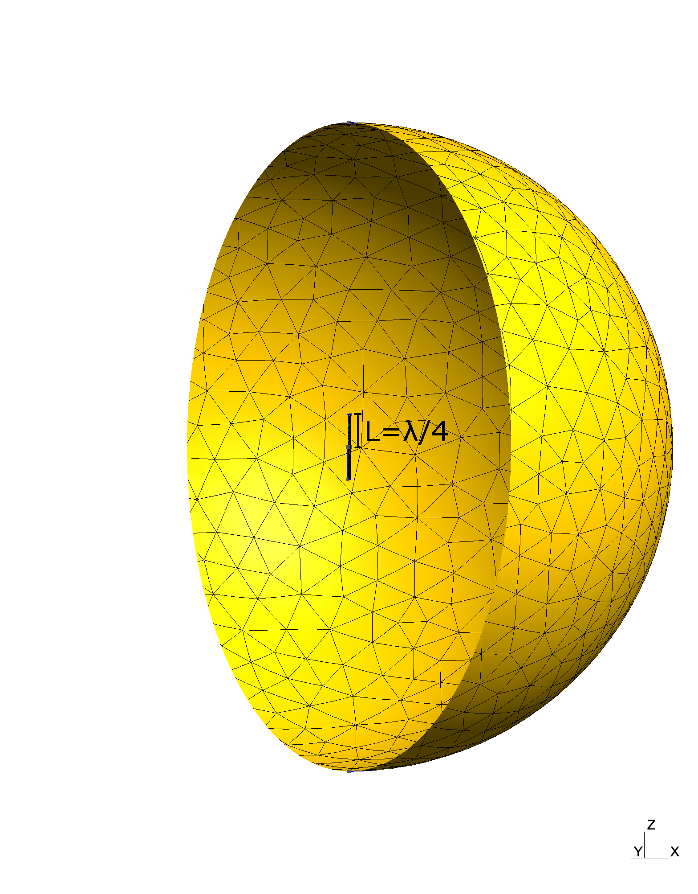
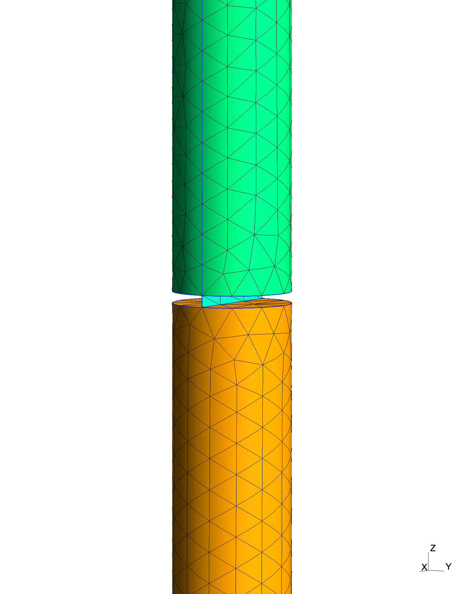
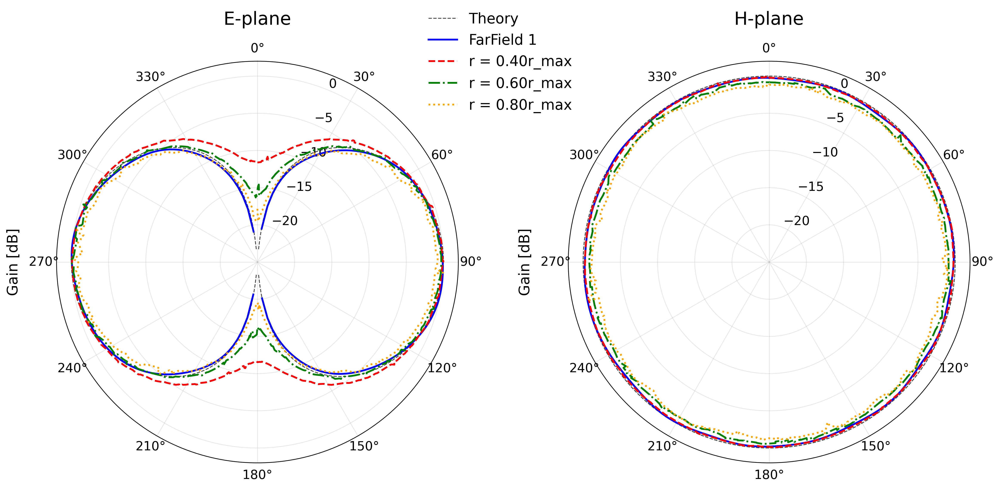
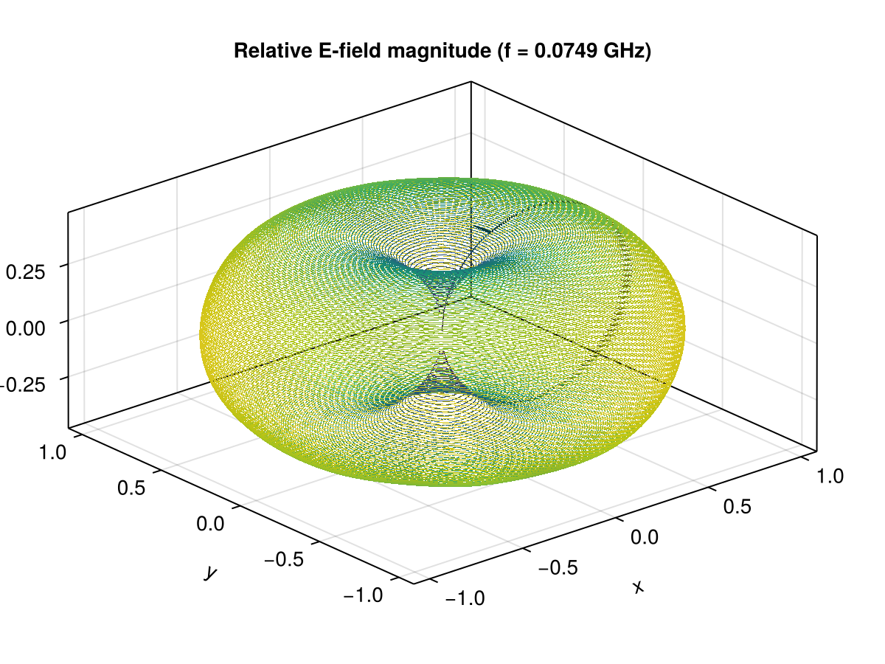

Dipole Antenna and Radiation Fields
The files for this example can be found in the examples/antenna/ directory of the Palace source code. The mesh was generated with outer_boundary_radius=2.5wavelength instead of the default value of outer_boundary_radius=1.5wavelength.
In this example, we study a half-wave dipole antenna and analyze its radiation characteristics. The dipole antenna is one of the most fundamental antenna types, consisting of two conducting elements of length $L$ fed at the center by a sinusoidal excitation.
For an infinitely thin half-wave dipole, the problem can be solved analytically and the solution serves as our reference for validation [1]. In the wave-zone, the operating wavelength in free space $\lambda$ is twice the total length of the antenna ($\lambda = 2 \times 2L = 4L$). The normalized field pattern on the E-plane (xz-plane) is given by
\[E(\theta) = \left|\frac{\cos\left(\frac{\pi}{2}\cos\theta\right)}{\sin\theta}\right|\,,\]
while the pattern is isotropic on the H-plane (xy-plane).
We will model a dipole antenna with arm length $L$ and finite radius $a$, solve a driven problem at the resonant frequency $\lambda = 4L$, and extract the radiation pattern $P(\theta)$ both at finite observation distances (processing the ParaView output) and at infinite distance (with the far-field extraction feature).
Problem Setup
The dipole is modeled as two thin infinitely conductive cylindrical wires with length $L = 1\text{ m}$ and radius $a = L/20 = 5\text{ cm}$, separated by a thin cylindrical gap of height $h = L/100 = 1\text{ cm}$. Given these geometrical characteristics, the operating wavelength is approximately $\lambda = 4\text{ m}$, corresponding to a frequency of $\nu = c / \lambda = 0.0749\text{ GHz}$.
The gap serves as the excitation point for the antenna. Rather than explicitly modeling the feeding circuit, we place a flat rectangular strip on the xz-plane that connects the two arms of the antenna. This strip functions as a lumped port to excite the system.
The surrounding medium is free space. In reality, electromagnetic waves would propagate freely to infinity. We model this by enclosing the antenna in a sphere of radius $r_{max} = 2.5\lambda = 10\text{ m}$ centered at the origin and applying appropriate boundary conditions to simulate the infinite domain.
The mesh is generated using Gmsh and consists of tetrahedral elements with appropriate refinement near the antenna structure. The element size increases with distance from the antenna, but is capped to ensure the wavelength is resolved by at least a few elements per wavelength. The mesh file is mesh/antenna.msh and is generated using the Julia script mesh/mesh.jl.
A visualization of the model and the resulting mesh is shown below.


The left image shows the outer domain and the inner antenna structure. The right image provides a close-up view of the gap region, where the rectangular port is aligned on the xz-plane and spans the diameter of the cylindrical conductors.
Configuration File
The configuration file for the Palace simulation is found in antenna.json. The simulation is performed in the frequency domain using the "Driven" solver type, operating at a single frequency of $0.0749\text{ GHz}$.
Since we assume the metallic rods are perfect conductors, we impose perfect electric conductor (PEC) boundary conditions on their surfaces. To prevent reflections of electromagnetic waves back into the computational domain, we apply "Absorbing" boundary conditions on the outer spherical boundary.
The antenna is driven using the rectangular strip as a lumped port. This port lies entirely in the xz-plane, and by setting "Direction": "+Z" and "Excitation": true, we impose an electric field aligned in the z-direction across the gap.
We use the far-field extraction feature in Palace to extract electric fields at infinity. To do so, we add a "PostProcessing" section under "Boundaries" with the same Attributes as the surface with "Absorbing" boundary conditions and we choose a positive value for "NSample". A NSample of 64800 means that the far-field sphere is uniformly discretized with resolution of one degree on the equator (to preserve the uniform distribution, the resolution changes as one moves towards the poles).
Finally, we enable "SaveStep" to ensure that field data is saved for ParaView output, which is necessary for extracting far-field radiation patterns during post-processing.
This simulation benefits from the "ComplexCoarseSolve" option. This setting adds a complex component to the initial guess for the coarse solve step, which would otherwise be purely real. For this particular problem, enabling this option accelerates convergence by several factors. The trade-off is significantly increased memory requirements, so, depending on the computational resources available, it may not be practical.
Analysis and Results
The simulation requires approximately 6 GBs of RAM and completes in a few minutes (depending on the hardware). The simulation produces a 160 MB postpro folder, which contains the electromagnetic fields that we will use to extract radiation patterns.
First, let us look at the far-field output. The postpro folder contains a file, farfield-E-7.49000000e-02.csv, with the far-field electric fields for the frequency 7.49000000e-02 GHz. The first few lines of this file are:
theta (deg.), phi (deg.), r*Re{E_x} (V), r*Im{E_x} (V), r*Re{E_y} (V), r*Im{E_y} (V), r*Re{E_z} (V), r*Im{E_z} (V)
0.000000000000e+00, 0.000000000000e+00, -1.398540472084e-04, -1.080138203515e-03, -7.561844979481e-04, -5.471814765239e-04, +0.000000000000e+00, +0.000000000000e+00
0.000000000000e+00, 1.406250000000e+00, -1.398540472084e-04, -1.080138203515e-03, -7.561844979481e-04, -5.471814765239e-04, +0.000000000000e+00, +0.000000000000e+00
...The plot_radiation_pattern.py script extracts the E-plane (xz-plane) and H-plane patterns from this file and produces polar plots for the relative radiation pattern.
Let us directly compare the result with extraction at finite radius. To do so, we read the ParaView files and sample the electric field onto spheres of predefined radius, producing CSV files with the components of electric field that follow the same format as farfield-E-<freq>.csv.
The extract_fields.py script samples the computed fields on spheres of predefined radius. This script uses ParaView's Python console (pvpython) and outputs the sampled field data to CSV files.
To explore the transition between near-field and far-field, we sample at different radii: 40%, 60%, and 80% of $r_{max}$. Once the CSVs are produced, we can call the plot_radiation_pattern.py with all the CSV files as in
plot_radiation_pattern.py farfield_r*.csv postpro/farfield-E*.csvThe results are shown below.

On the H-plane, we see the expected isotropic emission pattern for any of the extracted radii. On the E-plane, the results show that as we sample larger radii, we start seeing convergence towards the characteristic figure-eight pattern of a dipole antenna, with maximum radiation perpendicular to the antenna axis and nulls approximately along the antenna axis.
The plot_radiation_pattern.py can be extended to visualize the radiation fields in 3D with Matplotlib or similar packages. Alternatively, the CSV file can be converted to a VTK file and visualized with ParaView. farfield_csv2pvd.py implements this feature. For this example, the resulting 3D radiation pattern is shown below.

If you are trying to reproduce this plot, but find that your plots are not as nice as the one above, you might have a missed a note at the top of this page. The example mesh included in Palace extends only to $r_{max} = 1.5\lambda}$ (to reduce the computational resources required to run this example as a regression test). Re-generate the mesh with
julia -e 'include("mesh/mesh.jl"); generate_antenna_mesh(; filename="antenna.msh", outer_boundary_radius=10)'from the antenna folder.
References
[1] Stutzman, W. L., & Thiele, G. A., Antenna Theory and Design (3rd ed.), John Wiley & Sons, 2012.